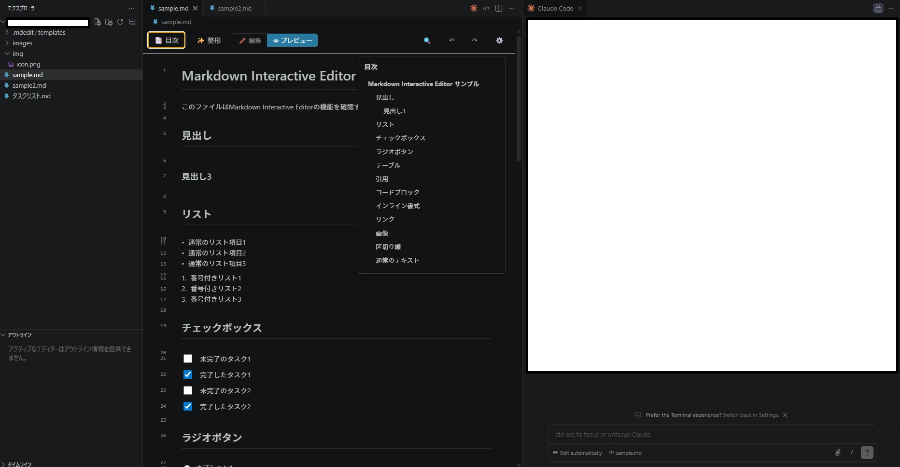
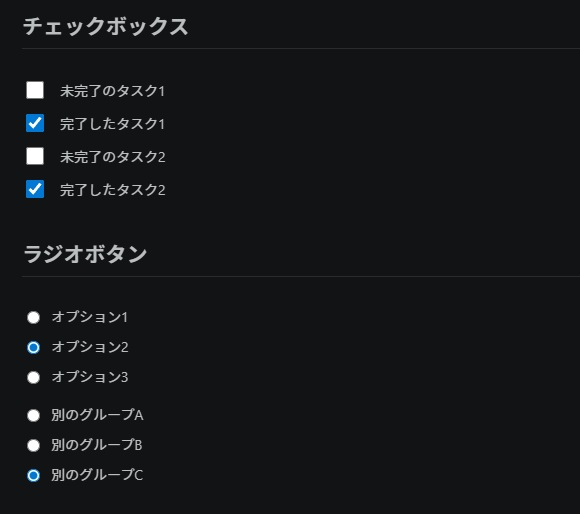
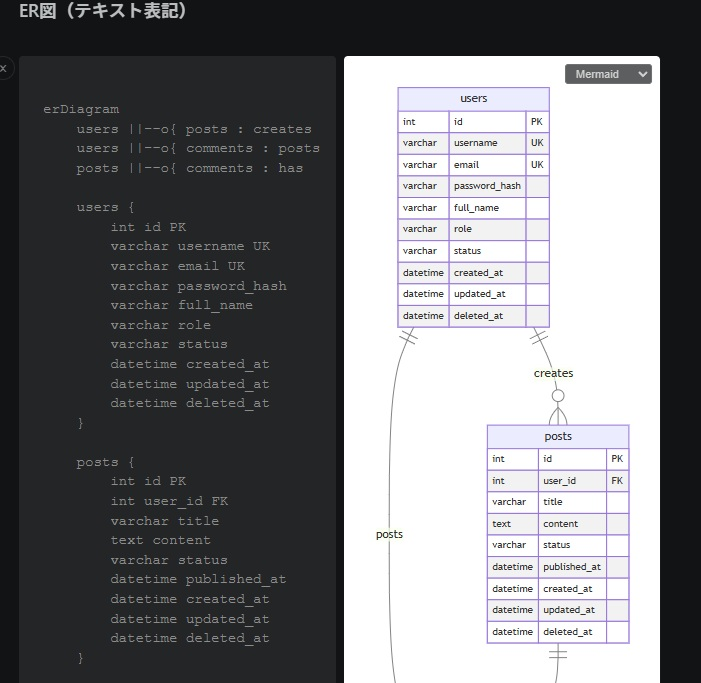
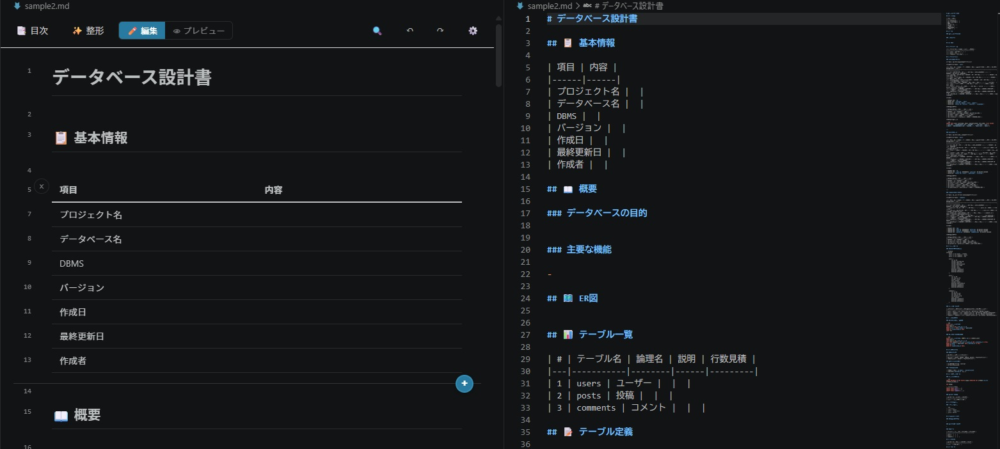

マークダウンファイルをプレビュー状態のまま直接編集できるWYSIWYGエディター VSCode拡張機能。ソースを意識せず、見たまま書ける編集体験を提供する。




VSCode Custom Editor APIを使い、*.mdファイルに対してWYSIWYGエディターをカスタムエディターとして登録。marked.jsでマークダウンをHTMLに変換し、contenteditable属性を使ってインライン編集を実現している。
編集内容の変更検知にはMutationObserverを使用。DOM変更をリアルタイムに検知し、マークダウン形式に変換してVSCodeのドキュメントに書き戻すことで、通常のテキストエディタと同じ保存フローを維持している。
画像のドラッグ&ドロップはWebView内のdropイベントで受け取り、拡張機能側にバイナリデータをメッセージパッシングで渡して保存。ファイル名重複時の処理（上書き・日付付加・確認）を設定から選択できる。